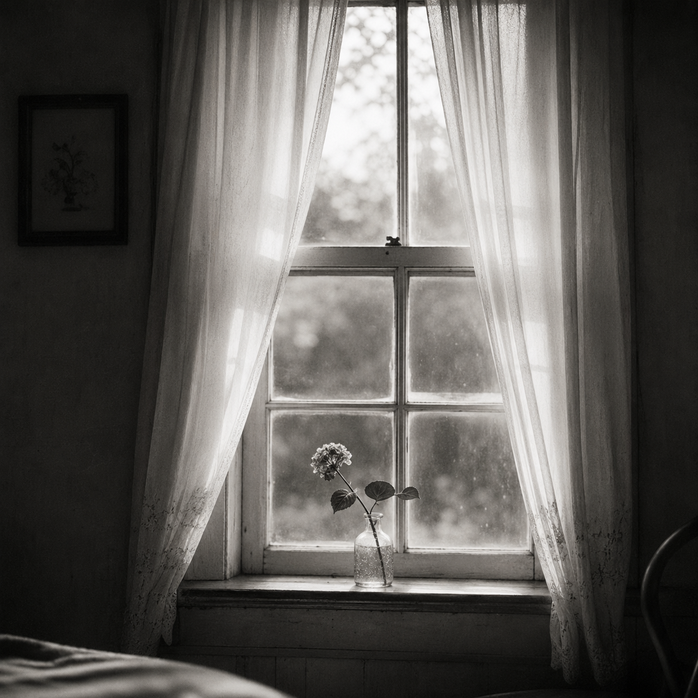
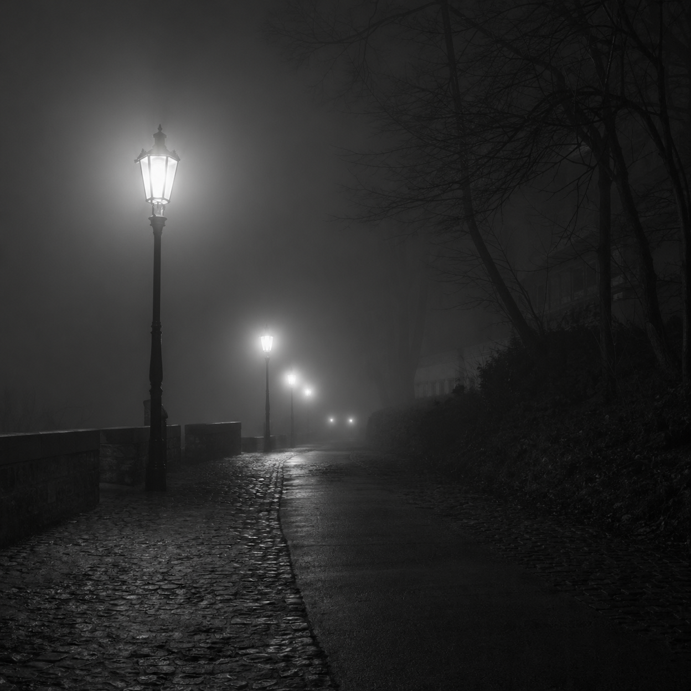
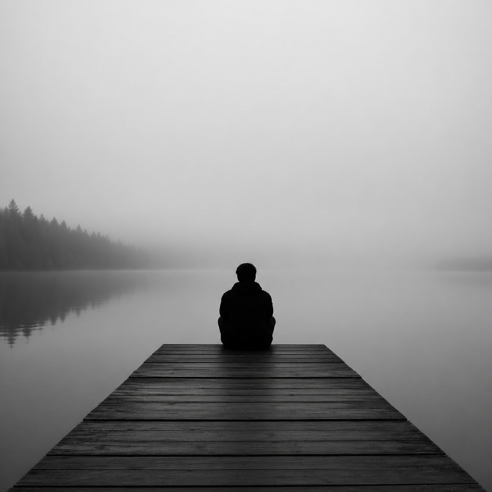
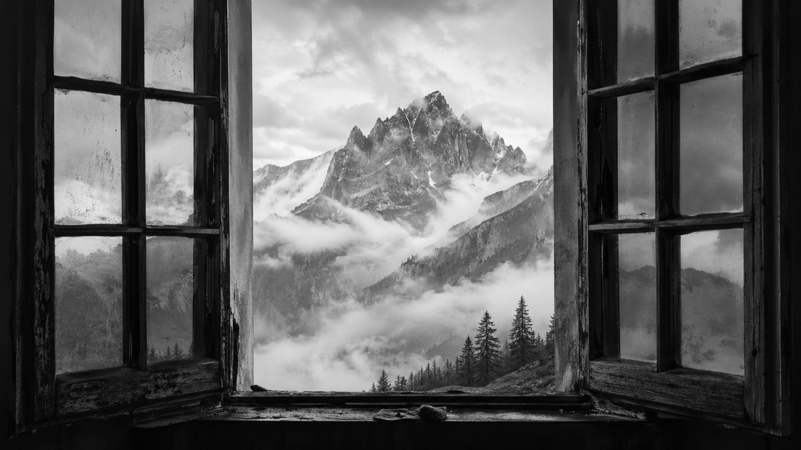

Fotografia.
Poesia.
Silêncio.
Lírion é onde a poesia encontra a imagem e o invisível ganha forma.
Explorar →
Entre o que se diz e o que se sente
Lírion
Entre o que se diz e o que se sente, nasce a poesia. No intervalo do silêncio, a alma escreve.
♡ 93 💬 8
09 mai. 2024

Caminhos que ninguém vê
Caio F.
Há caminhos que não aparecem no mapa, mas levam a lugares que só quem sente é capaz de encontrar.
♡ 76 💬 5
05 mai. 2024

Aquietar o que não cabe
Mariana V.
Em cada fim, há um recomeço que não se explica. É só o coração tentando entender o que a mente não alcança.
♡ 128 💬 12
12 mai. 2024
O vento que sussurra versos
Julia R.
Há poemas que o vento escreve nas cortinas da janela e a gente só entende se souber escutar em silêncio.
♡ 112 💬 9
11 mai. 2024

Silêncios que se falam
por Julia R.
O tempo em suas mãos
por Lucas A.
Passos que ecoam
por Pedro H.
Sobre o que não volta
por Marina V.